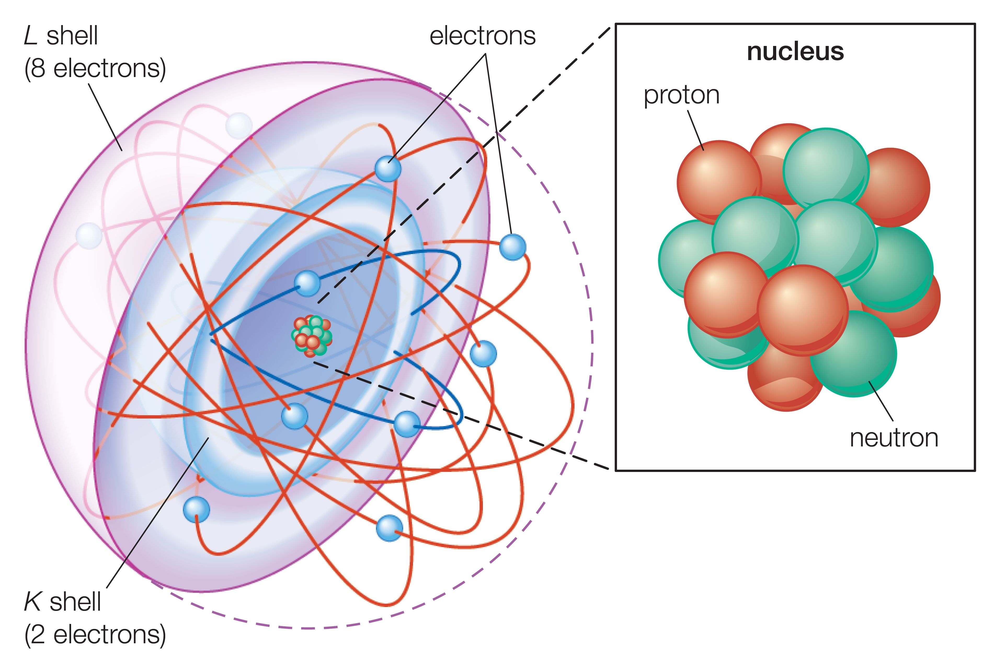

Structure Électronique d'un Atome
La structure électronique des atomes et des molécules est un concept fondamental de la chimie quantique. Elle éclaire le comportement des éléments et nous permet de comprendre le monde microscopique qui nous entoure. Cette structure est à la base de nombreuses propriétés physiques et chimiques de la matière.
Noyau et électrons : les acteurs principaux
- Noyau : Au cœur de l'atome se trouve le noyau, dense et compact, constitué de protons et de neutrons. Le nombre de protons, unique à chaque élément, définit son numéro atomique (Z).
- Électrons : Autour du noyau gravitent les électrons, des particules chargées négativement et bien plus légères que les protons et les neutrons. Ces électrons ne tournent pas sur des orbites circulaires comme on le pensait autrefois, mais occupent des zones de probabilité de présence qu'on appelle orbitales atomiques.
Organisation des électrons : un jeu de couches et de sous-couches
- Couches électroniques : Les électrons se répartissent en couches électroniques numérotées de 1 à 7, en commençant par la plus proche du noyau (couche 1) et en s'éloignant progressivement. Chaque couche peut contenir un nombre maximal d'électrons donné par la formule 2n², où n est le numéro de la couche.
- Sous-couches : Chaque couche électronique se subdivise en sous-couches identifiées par des lettres (s, p, d, f). Ces sous-couches correspondent à des formes et des énergies différentes des orbitales atomiques.
Remplissage des orbitales : le principe d'Aufbau et la stabilité
- Principe d'Aufbau : Les électrons préfèrent occuper les orbitales disponibles de plus basse énergie en premier. Ce principe guide le remplissage des orbitales atomiques.
- Stabilité et configuration électronique : Un atome est stable lorsque ses orbitales les plus externes sont remplies d'électrons selon le principe d'Aufbau. La configuration électronique, qui décrit la répartition des électrons dans les orbitales, est une signature unique de chaque élément et permet de prédire sa réactivité chimique.
Formation des molécules : un ballet de liaisons
- Liaison chimique : Lorsque deux atomes ou plus se lient pour former une molécule, leurs orbitales atomiques interagissent et se combinent pour former des orbitales moléculaires.
- Types d'orbitales moléculaires : Les orbitales moléculaires peuvent être liantes, antiliantes ou non liantes. Les orbitales liantes renforcent la liaison entre les atomes, tandis que les orbitales antiliantes l'affaiblissent. Les orbitales non liantes n'ont aucun impact direct sur la liaison.
- Théorie des orbitales moléculaires (TOM) : La théorie des orbitales moléculaires (TOM) est un outil puissant pour expliquer la formation et la structure des liaisons chimiques dans les molécules. Elle permet de comprendre la géométrie moléculaire, la réactivité et les propriétés spectroscopiques des molécules.